Gallery of all PyClaw applications¶
Contents
- Gallery of all PyClaw applications
- 1-dimensional advection
- 1-dimensional variable-velocity advection
- 1-dimensional acoustics
- 1-dimensional Burgers’ equation
- 1-dimensional shallow water equation
- 1-dimensional nonlinear elasticity
- 1-dimensional Euler equations
- 2-dimensional advection
- 2-dimensional variable-coefficient advection
- 2-dimensional acoustics
- 2-dimensional variable-coefficient acoustics
- 2-dimensional advection-reaction
- 2-dimensional shallow water equations
- 2-dimensional shallow water on the sphere
- 2-dimensional Euler equations
- 2-dimensional KPP equation
- 2-dimensional p-system
1-dimensional variable-velocity advection¶
Advecting Gaussian and square wave with periodic boundary.
Source code ... Plots
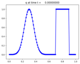 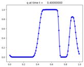 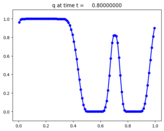1-dimensional acoustics¶
Acoustics equations with wall boundary at left and extrap at right.
Source code ... Plots
 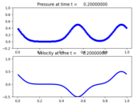
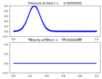
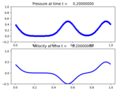
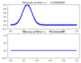
1-dimensional Burgers’ equation¶
Burgers’ equation with sinusoidal initial data, steepening to N-wave.
Source code ... Plots
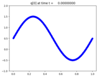 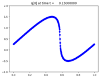1-dimensional shallow water equation¶
Shallow water shock tube.
Source code ... Plots
 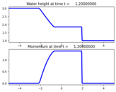
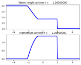
Flow over a sill.
Source code ... Plots
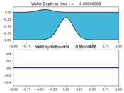 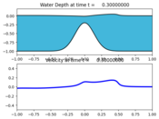1-dimensional nonlinear elasticity¶
Evolution of two trains of solitary waves from an initial gaussian.
Source code ... Plots


1-dimensional Euler equations¶
Woodward-Colella blast-wave interaction problem.
Source code ... Plots
 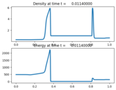
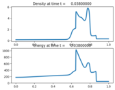
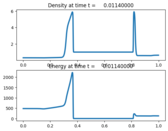
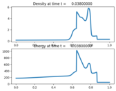
Shu-Osher problem.
Source code ... Plots
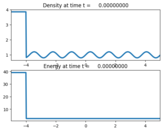 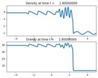
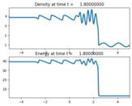
Shock tube problem.
Source code ... Plots
 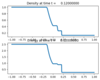
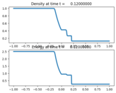
2-dimensional advection¶
Advecting square with periodic boundary conditions.
Source code ... Plots
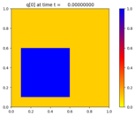 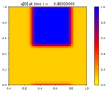2-dimensional variable-coefficient advection¶
Advection in an annular region.
Source code ... Plots
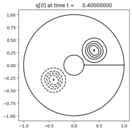2-dimensional acoustics¶
Expanding radial acoustic wave in a homogeneous medium.
Source code ... Plots
 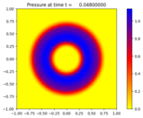
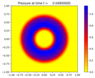
2-dimensional variable-coefficient acoustics¶
Expanding radial acoustic wave in a two-material medium with an interface.
Source code ... Plots
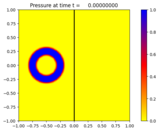 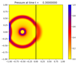 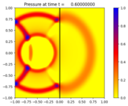Acoustic wave scattered by two cylinders.
Source code ... Plots
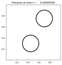 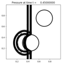


2-dimensional shallow water on the sphere¶
Wavenumber 4 Rossby-Haurwitz wave on a rotating sphere.
Source code ... Plots
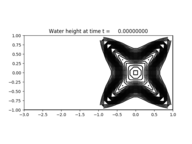 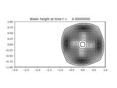 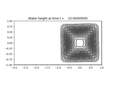2-dimensional Euler equations¶
Shock-bubble interaction.
Source code ... Plots
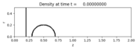 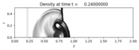 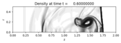Shockwave hitting a step.
Source code ... Plots
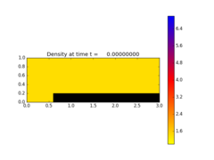 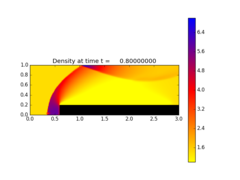
Quadrants: 2D Riemann problem with four shockwaves.
Source code ... Plots
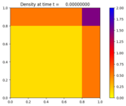 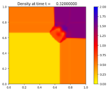 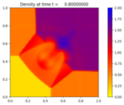2-dimensional p-system¶
Radial wave in a checkerboard-like medium.
Source code ... Plots
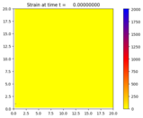 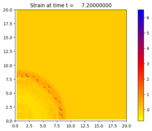 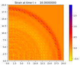

Version 5.4.0
Table Of Contents
- Gallery of all PyClaw applications
- 1-dimensional advection
- 1-dimensional variable-velocity advection
- 1-dimensional acoustics
- 1-dimensional Burgers’ equation
- 1-dimensional shallow water equation
- 1-dimensional nonlinear elasticity
- 1-dimensional Euler equations
- 2-dimensional advection
- 2-dimensional variable-coefficient advection
- 2-dimensional acoustics
- 2-dimensional variable-coefficient acoustics
- 2-dimensional advection-reaction
- 2-dimensional shallow water equations
- 2-dimensional shallow water on the sphere
- 2-dimensional Euler equations
- 2-dimensional KPP equation
- 2-dimensional p-system